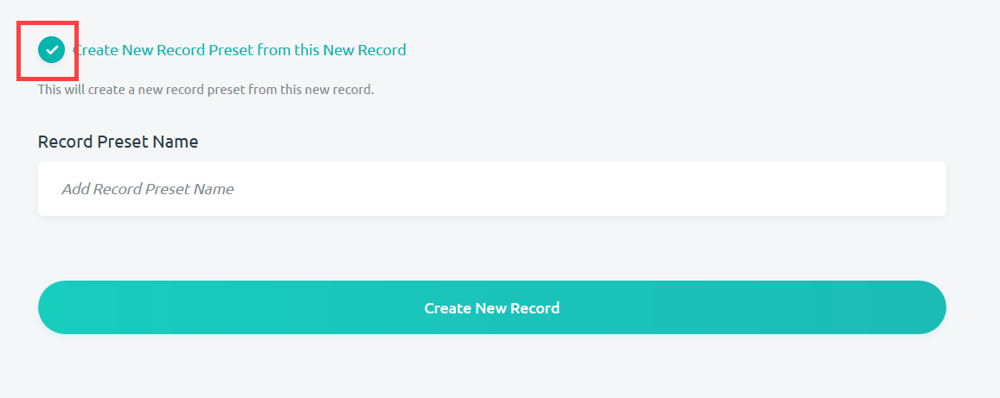
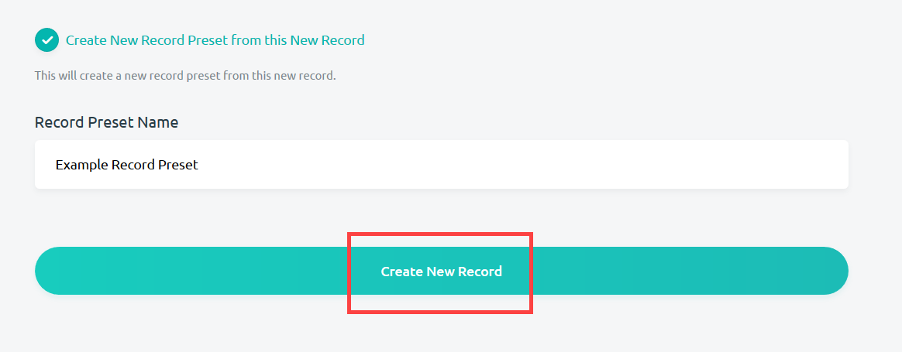
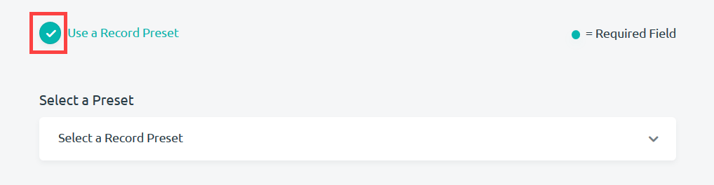
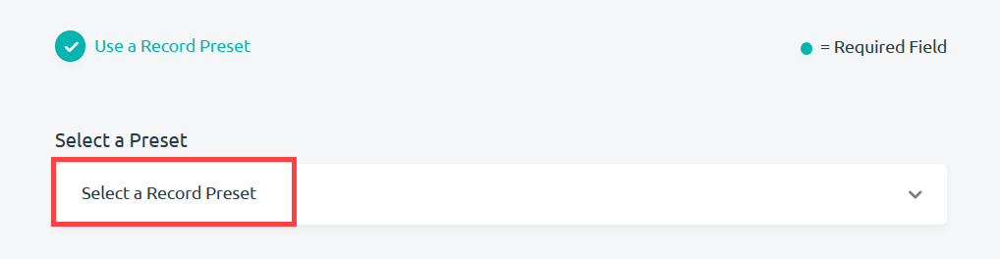
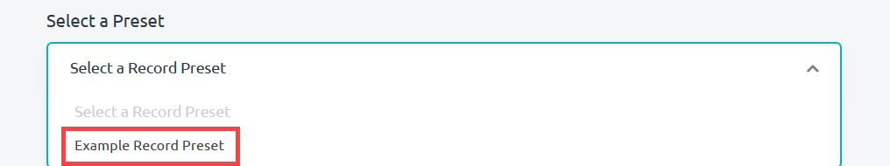
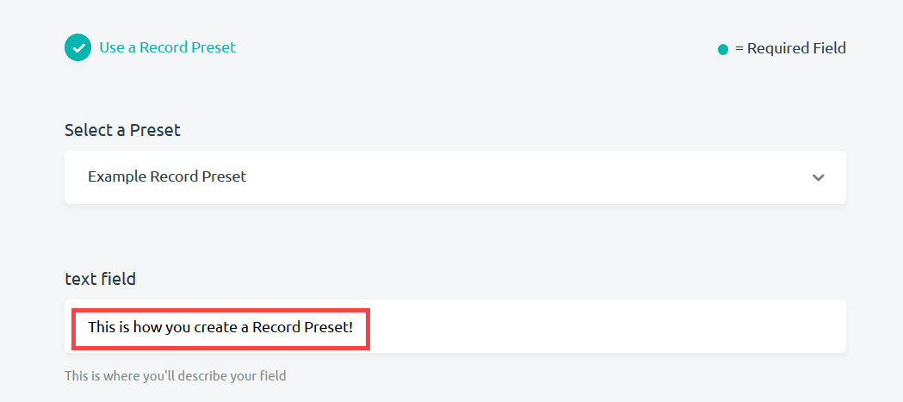
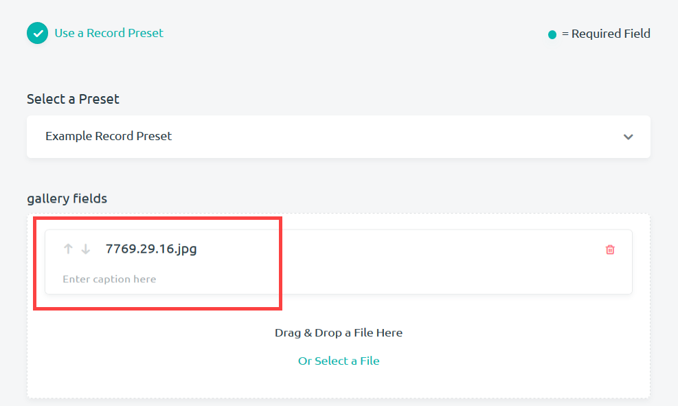

Using Record Presets
Digitization is a time-consuming process, especially when you are trying to enter as thorough and useful metadata as possible. Record presets become an especially useful feature in this regard, when many objects from a collection have the same pattern of metadata. Record presets allow you to create a collection of preselected entries for any number of fields in a form. You can then give these presets a name, and easily assign them to new records that they contain.
Creating a Record Preset
When you finish creating a record, you have the option to create a record preset which records all of the data that you entered into the fields for that record. Any future records using this preset will then initially fill their fields with the same values. This is useful when you believe future records will have similar metadata as the record preset. Follow these steps to create record presets:
-
After entering data into a record, you can create a record preset by checking the Create New Record Preset From this Record option at the bottom of the new record page.

-
Enter a name for the record preset under Record Preset Name. It should be characteristic for the type of data that it holds(i.e. "Site A Ceramic"). Then select Create New Record to create the record and the record preset.

Using a Record Preset
Once you have created a record preset, you can use it for any future records within the form it was created for. Using a record preset will initially fill a record with the values saved from creating the original record. However, these values can be edited after the record preset has been selected. Follow these steps to use a record preset:
-
When you first start creating a record, you have the option to use any record presets you've created by checking the Use a Record Preset option towards the top of the page. A box will appear directly below.

-
Press Select a Record Preset to open up a drop-down menu of any record presets that you've made.

-
Choose your record preset by clicking on the option from the drop-down menu you want.

The examples below show how record presets will work. In this case, the "Example Record Preset" fills a text field with a value that was entered into a previous record ("This is how you create a Record Preset!").

Any field type can be filled with a preset value using record presets. The "Example Record Preset" also filled a gallery field with an image.
